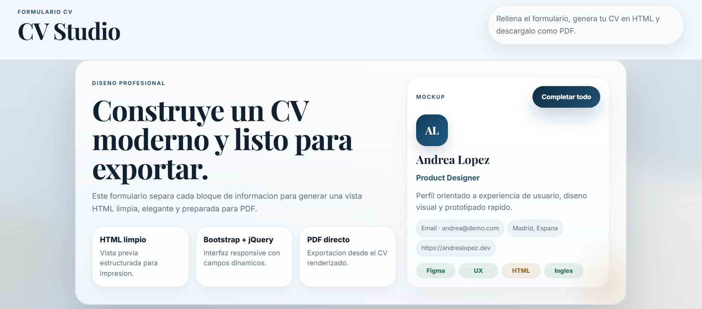

Proyectos

Creador de CV (Formulario → PDF)
Formulario que permite generar un currículum en formato PDF a partir de los datos introducidos por el usuario.

Formulario que permite generar un currículum en formato PDF a partir de los datos introducidos por el usuario.